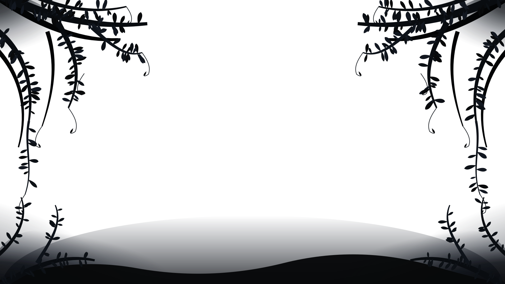

Work fast. Live slow.
Turn early sparks
into real momentum.
From zero to something real — find your co-founder, ship your MVP, and build alongside people who actually get it. No vanity metrics, no performative networking.
Co-founders
MVPs & Shipping
Early Teams
Boards for every
stage of the build.
The right room for every phase — from idea to fundraise to first hire. Each board keeps noise low and signal high.
Idea
Fundraise
Hire
The Reality

Find your people,
build your thing
You don't have all it figured out, find your people, and start building something meaningful together.
Scroll to explore

Early Access
Cross the bridge with the people who get it.
We're opening Begin in small waves of builders, founders, and curious minds. Join the waitlist and claim your spot.